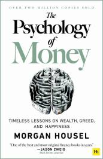

The Psychology of Money
AZW3 · EPUB · PDF
|  | |
| Harriman House | |
| 2020 | |
Doing well with money isn’t necessarily about what you know. It’s about how you behave. And behavior is hard to teach, even to really smart people.
Money―investing, personal finance, and business decisions―is typically taught as a math-based field, where data and formulas tell us exactly what to do. But in the real world people don’t make financial decisions on a spreadsheet. They make them at the dinner table, or in a meeting room, where personal history, your own unique view of the world, ego, pride, marketing, and odd incentives are scrambled together.
In The Psychology of Money, award-winning author Morgan Housel shares 19 short stories exploring the strange ways people think about money and teaches you how to make better sense of one of life’s most important topics.